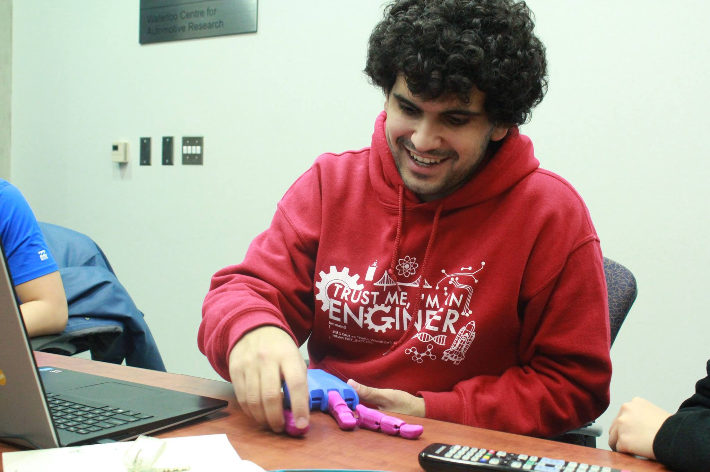

The Enable team is one of the Biomechatronics Club mechanical design teams and we are taking on the task of designing and building a passive prostatic hand. The team mainly consists of students passionate about learning, the Biomechanical field, and changing the world.
The UW Enable team is based on “Enable Community Foundation”. The Enable Community Foundation aims to implement and validate a scalable high-tech infrastructure that matches recipients with volunteers who create open-sourced assistive technologies…for free or minimal costs. It supports educational materials and program to recruit and develop more digital humanitarians. And it is developing partnerships and programs to bring these inspirational new methods and solutions to the entire world.
